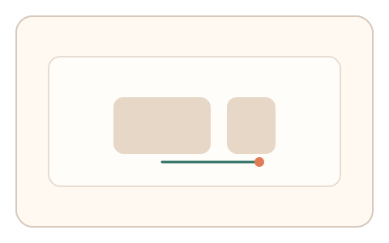
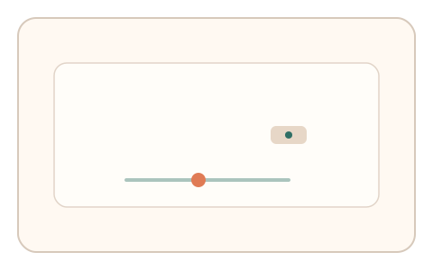
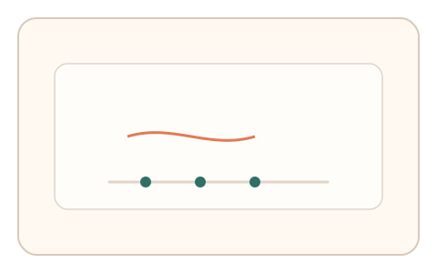

#176
Reverse Brainstorming - Round 4
已扩展
多点并发输入
要求短时内并发完成两类输入，判定多通道事件的时序一致性。
概念原文
要求短时内同时进行两类输入（如拖拽 + 键盘轻触），并判定多通道事件间的时序一致性。
自动化脚本很难模拟多通道并发与微同步。
研究背景
多通道并发需要感知‑运动协调，真实用户会有稳定的跨通道滞后与同步结构。脚本难以精确模拟微同步。
核心机制
- 同时触发两类输入任务（拖拽+按键）。
- 记录两个通道的时间线。
- 计算同步窗口与滞后分布。
- 基于并发一致性判定。
用户流程
- 步骤 1：用户看到并发输入提示。
- 步骤 2：同时完成拖拽与按键/点击。
- 步骤 3：系统分析同步性并判定。
判定信号
跨通道滞后
真实同步存在稳定滞后范围。
并发重叠比例
真实并发会有一定重叠区间。
判定逻辑
滞后与重叠需符合人类分布；完全同步或完全分离判异常。
对抗面
- 脚本固定延迟触发两通道
- 回放多通道事件序列
防御与缓解
- 随机化并发提示与持续时长
- 加入微小相位扰动
- 多轮并发一致性验证
可达性与风险
提供顺序替代模式与低负担通道。
- 部分设备不支持并发输入
- 对运动障碍用户不友好
可视化状态

状态 1：并发提示
两通道输入同时提示。

状态 2：同步操作
拖拽与按键并发执行。

状态 3：时序判定
分析并发滞后与重叠。
参考资料
Multimodal interaction
说明多通道输入与同步。
Human–computer interaction
说明并发输入场景。